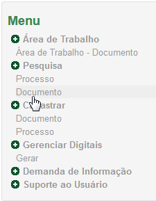
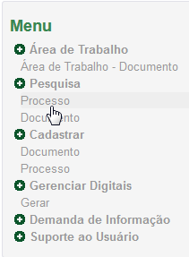
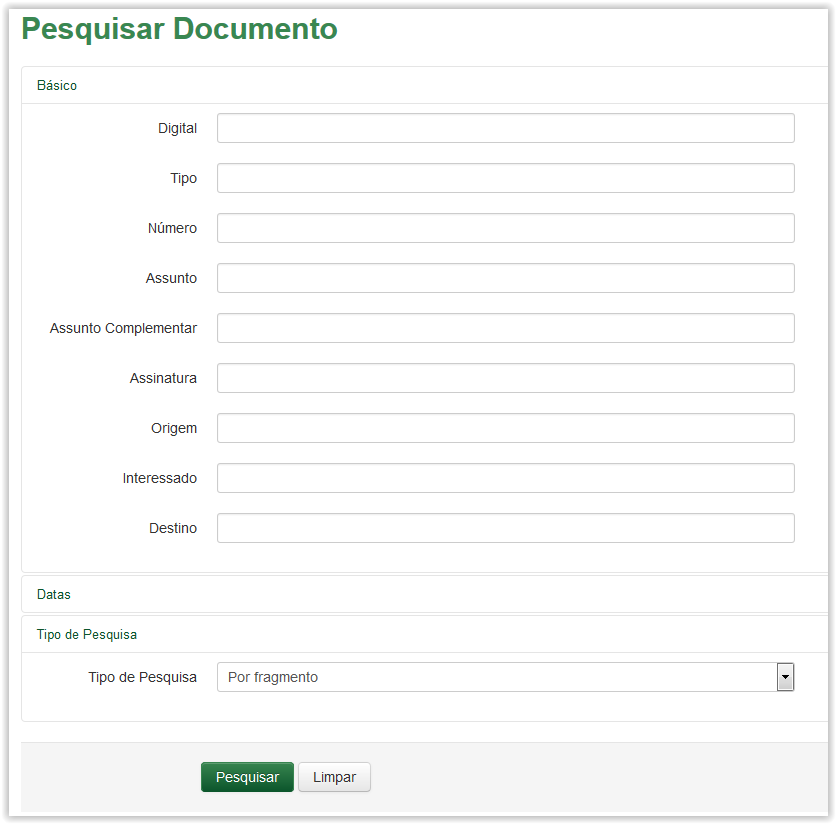
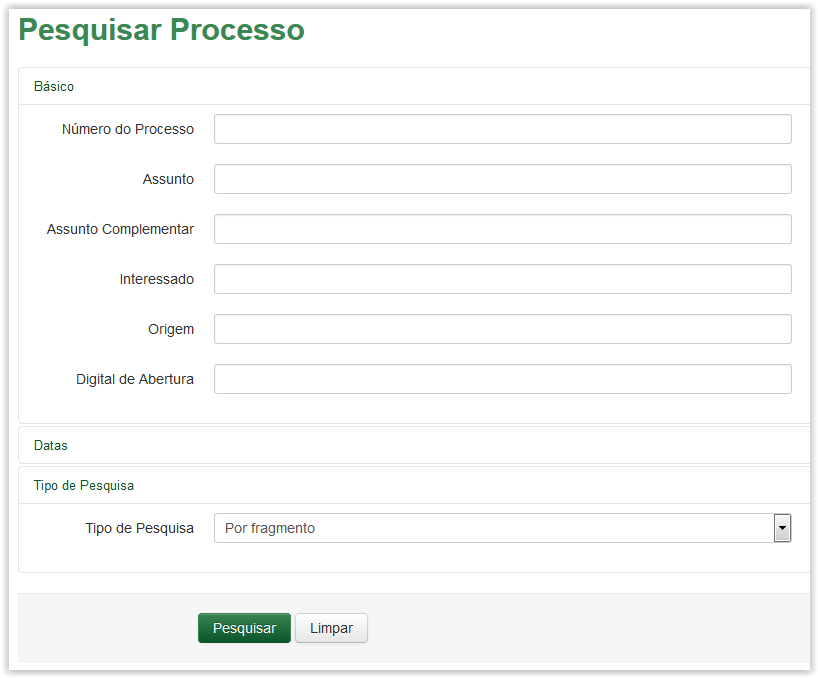
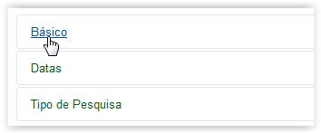
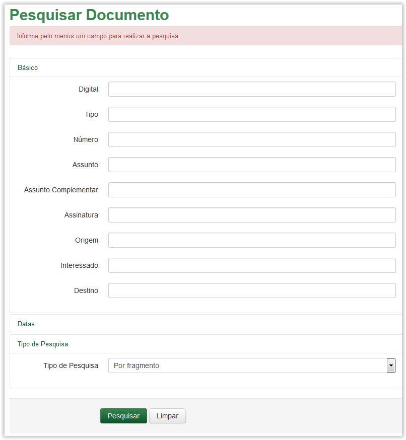
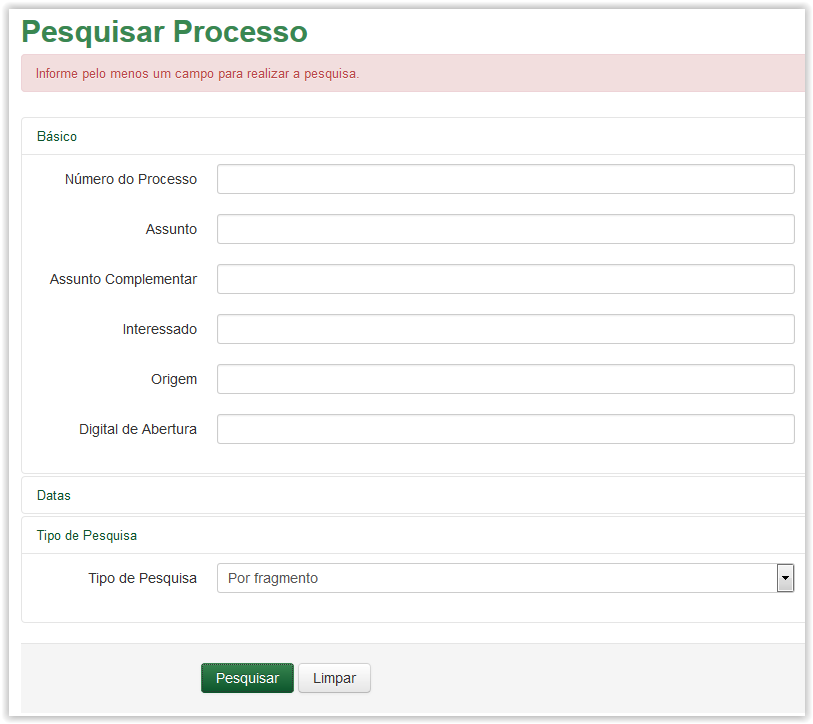

Pesquisar
A funcionalidade de Pesquisar permite buscar um processo ou documento de diversas maneiras.
Para apresentar a tela Pesquisar Documento selecione a opção Documento no menu do sistema SGDoc:

Menu do sistema SGDoc
Para apresentar a tela Pesquisar Processo selecione a opção Processo no menu do sistema SGDoc:

Menu do sistema SGDoc
As telas Pesquisar Documento e Pesquisar Processo são apresentadas:

Tela Pesquisar Documento

Tela Pesquisar Processo
As telas Pesquisar Documento e Pesquisar Processo possuem três seções: Básico, Datas e Tipo de Pesquisa. Os dados inseridos em uma, não se apagam quando outra seção é expandida e preenchida. A pesquisa é realizada com base nas informações que constam no cadastro do Documento ou Processo (dependendo de qual funcionalidade a pesquisa é realizada). Se nenhum dos campos das seções Básico ou Datas for preenchida, ao clicar no botão o sistema apresenta uma mensagem de erro. (Veja Nota 1)
As seções Datas e Tipo de Pesquisa são iguais para ambas as pesquisas (Documento e Processo).
Ao clicar no botão o sistema apaga todos os dados informados.
 Formas de "expandir" ou "retrair" as seções da pesquisa!
Formas de "expandir" ou "retrair" as seções da pesquisa!

Selecionando uma seção da tela de Pesquisa
IMPORTANTE!!
 Nota 1:
Nota 1:
Se nenhum dos campos da seção Básico ou Datas for preenchida, ao clicar no botão Pesquisar o sistema apresenta a mensagem "Informe pelo menos um campo para realizar a pesquisa":

Tela Pesquisar Documento - Mensagem de erro

Tela Pesquisar Processo - Mensagem de erro
Created with the Personal Edition of HelpNDoc: Write EPub books for the iPad